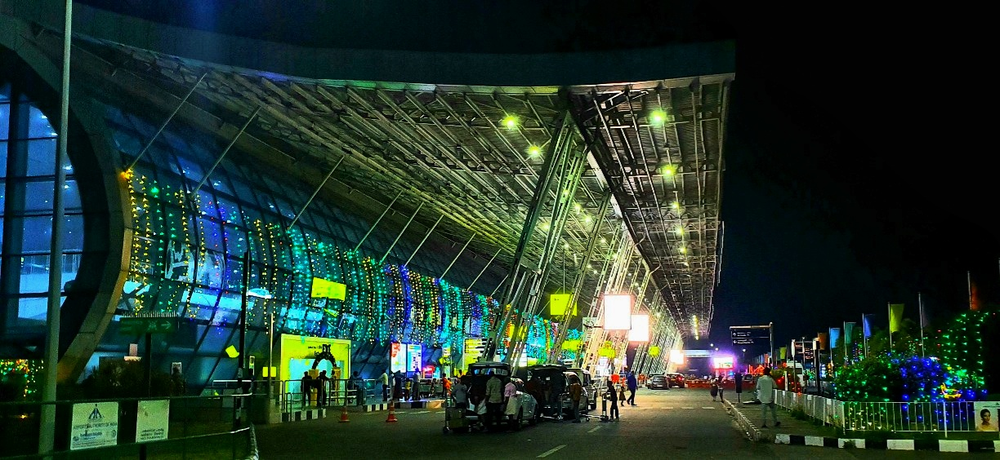

Thiruvananthapuram International Airport
Eanchakkal,Thiruvananthapuram

Thiruvananthapuram International Airport (IATA: TRV), is an international airport that serves Thiruvananthapuram, the capital city of Kerala, India. Established in 1932, it is the first airport in the state of Kerala and the fifth international airport of India, officially declared in 1991.It is the operating base of Air India, Air India Express, IndiGo and SpiceJet.